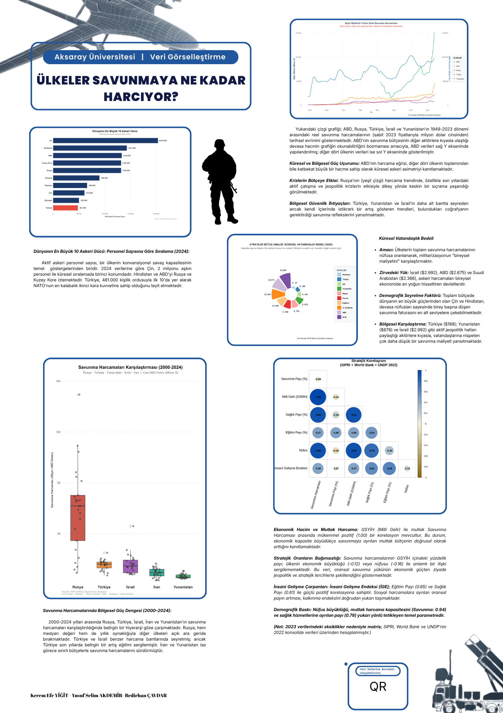
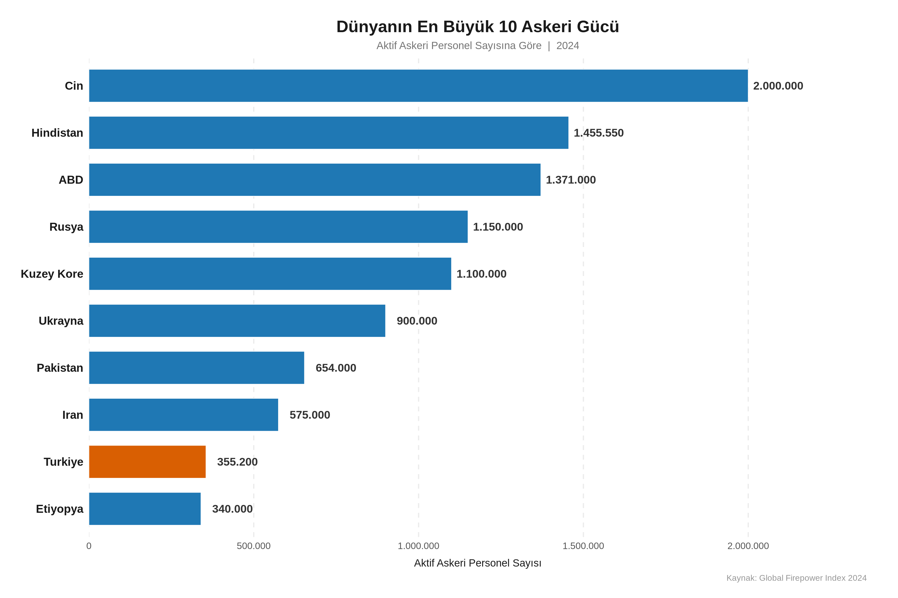
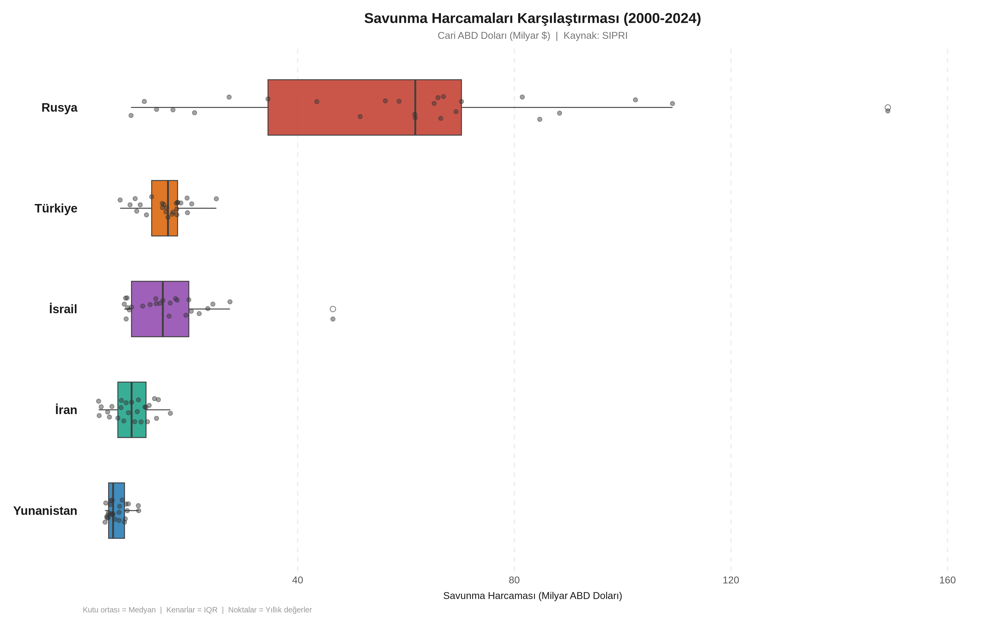
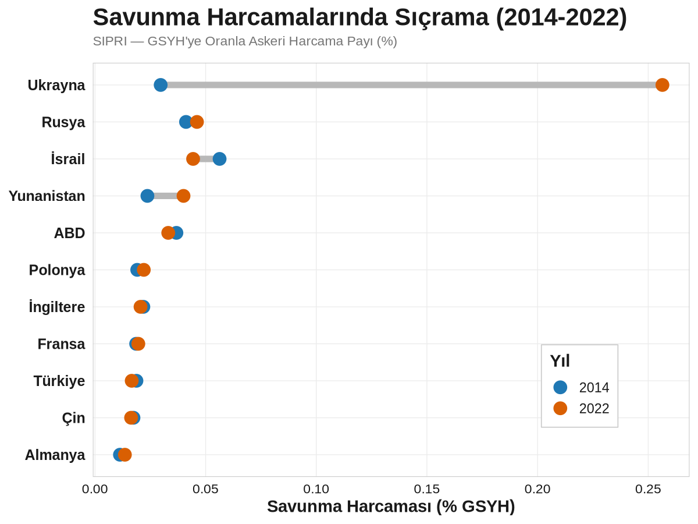
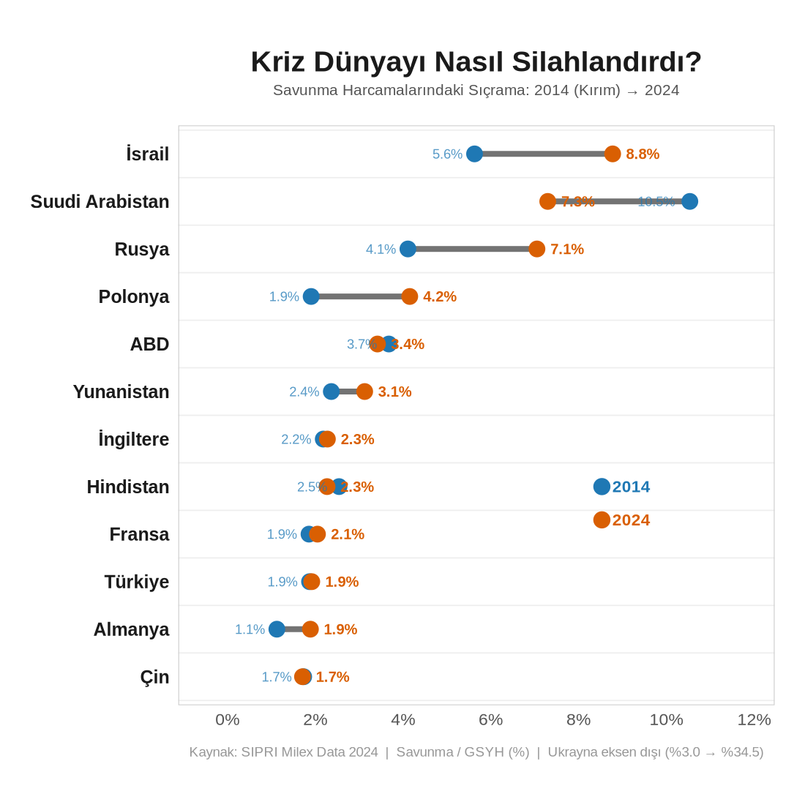
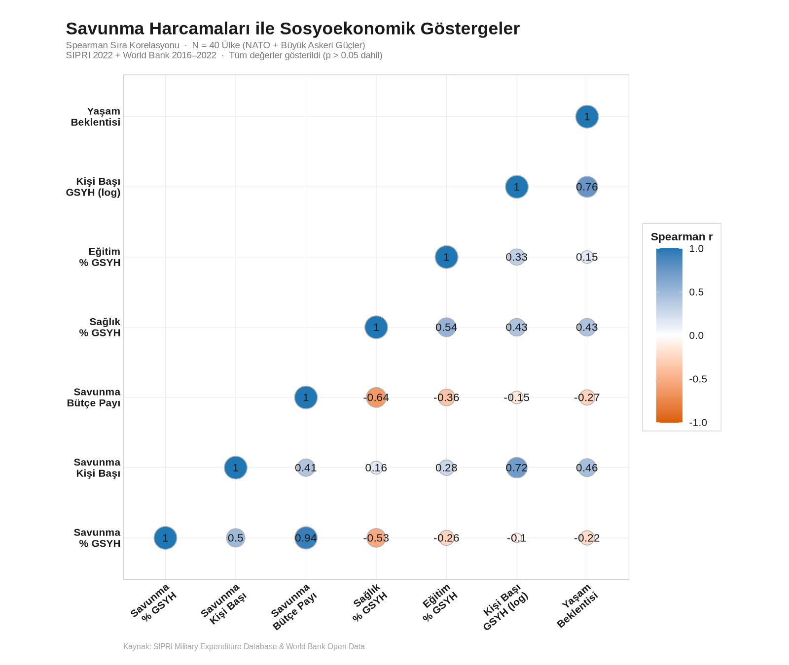
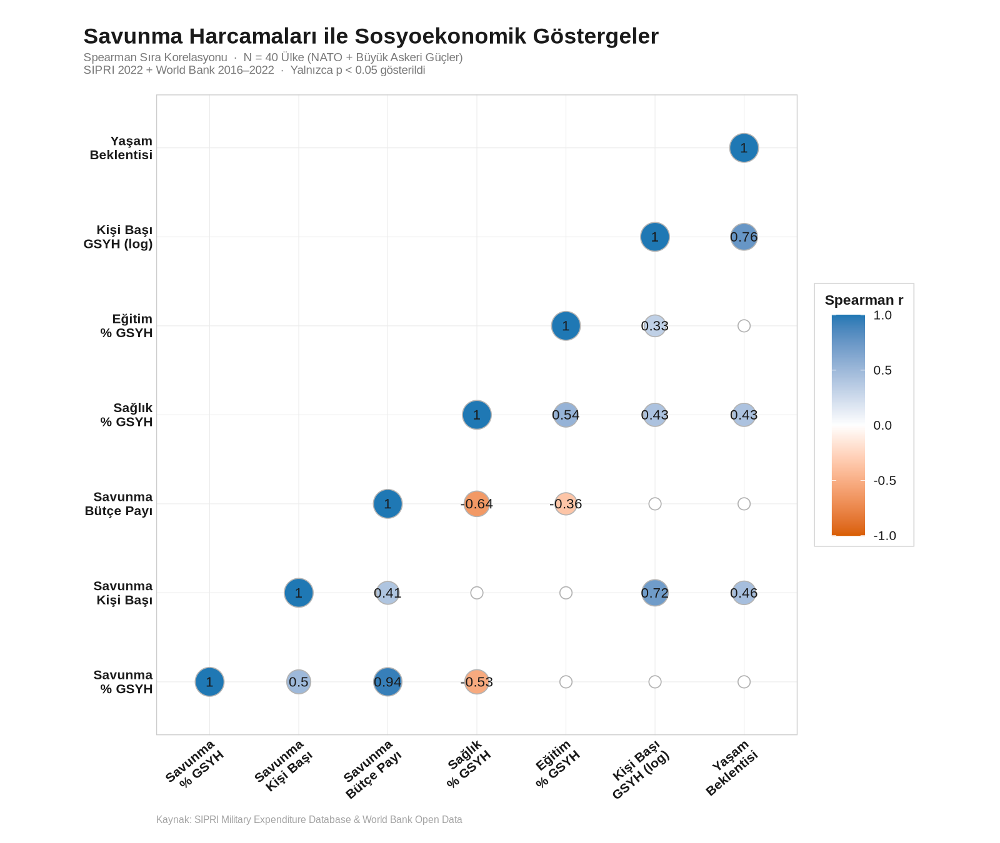

{kind=link}
Dijital afiş

Afişte kullanılan ve analiz çıktıları
Bu görseller depodaki rstudio/ betikleriyle üretilmiştir; sayfada gösterilen kopyalar assets/images/charts/ altındadır.
{kind=link}

Çubuk — aktif askeri personel (GFP 2024)
{kind=link}

Boxplot — seçili ülkeler (SIPRI, 2000–2024)
{kind=link}

Sıçrama — savunma % GSYH, 2014 → 2022
{kind=link}

Sıçrama — savunma % GSYH, 2014 → 2024
{kind=link}

Korelogram — tüm Spearman değerleri
{kind=link}

Korelogram — yalnızca p < 0.05
Veri kaynakları
| Veri | Kurum | Bağlantı |
|---|---|---|
| Askeri harcama (Milex) | SIPRI | sipri.org/databases/milex |
| GSYH, sağlık/eğitim % GSYH, yaşam beklentisi | World Bank (WDI) | data.worldbank.org |
| Aktif personel sıralaması (afiş çubuğu) | Global Firepower | globalfirepower.com |
| İGE (afişte varsa) | UNDP HDI | hdr.undp.org |
Depoda analiz için kullanılan SIPRI Excel dosyası: data/SIPRI-Milex-data-1949-2024_2.xlsx
Kod ve metodoloji
- Korelogram:
rstudio/korelogram_8degisken.r— SIPRI 2022 + WDI (2018–2022 penceresi, ülke başına en güncel gözlem), Spearman,ggcorrplot, çıktılarassets/images/charts/.